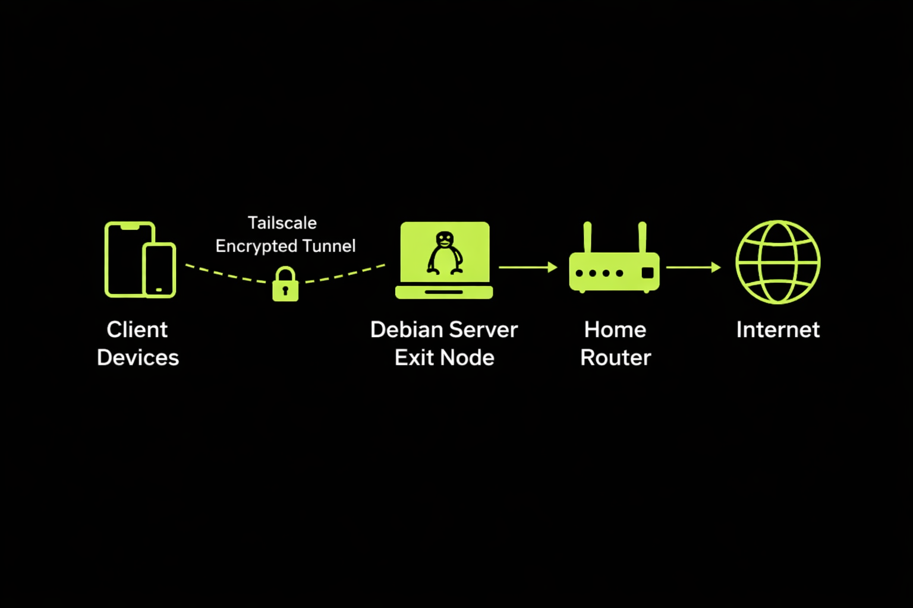
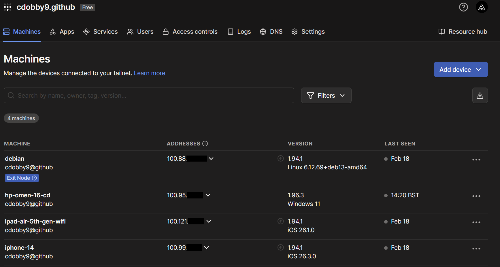

Why I Did This
Like most people, I was paying for a VPN subscription without really questioning it. Then I realised something simple: I already had a computer at home, so why not just use that instead?
So I took an old HP all-in-one and turned it into a secure VPN server, a machine I could access remotely, and the foundation for self-hosted services later on. It started as a cost-saving experiment and ended up being a genuinely useful piece of infrastructure.
What This Actually Is
At a surface level, this project is just a VPN. The more interesting version is that it is a small distributed system made up of a client device on an external network, an encrypted overlay network, a self-hosted node acting as a gateway, and the routing and network address translation needed to move traffic between them.
What I effectively built was a system that redefines where my home network exists. Instead of being tied to one physical location, it becomes something I can access from anywhere.
A VPN only sounds simple until you start thinking about routing, trust boundaries, and where your traffic is actually exiting to the internet.

Installing Debian
I installed Debian 13 using the minimal installer with no desktop environment. That meant a core system, an SSH server, and very little else. It keeps the machine fast, light, and much closer to how real servers are typically run.
That also forced me to work from the terminal from the start, which was useful because this project was really about understanding the system rather than decorating it.
Locking It Down First
Before I touched the VPN side of it, I wanted the base machine to be secure. The first step was updating everything, enabling a firewall, and allowing only SSH.
sudo apt update && sudo apt upgrade -y
sudo apt install ufw -y
sudo ufw allow OpenSSH
sudo ufw enable
I then switched SSH over to key-based authentication instead of passwords. That meant generating a key,
copying it to the server, and then disabling password login and root login in
/etc/ssh/sshd_config.
ssh-keygen
ssh-copy-id charles@server-ip
sudo nano /etc/ssh/sshd_config
PasswordAuthentication no
PermitRootLogin no
sudo systemctl restart sshTailscale
Instead of exposing services to the public internet or spending time on router port forwarding, I used Tailscale. It made the whole setup far simpler.
curl -fsSL https://tailscale.com/install.sh | sh
sudo tailscale up
After logging in, the server gets a private Tailscale address in the 100.x.x.x range. That
means I can connect from anywhere, everything is encrypted, and I do not need to open ports on my home
router.
Why Tailscale Instead of a Traditional VPN?
I could have used OpenVPN or configured WireGuard directly, but Tailscale changes the model. Instead of pushing traffic through a public-facing VPN server, it creates a secure overlay network and handles NAT traversal for me.
Conceptually, it behaves less like the classic commercial VPN model and more like a private encrypted network where my devices can find each other directly.
Turning It Into a Full VPN
Remote access was useful on its own, but I wanted all my traffic to route through home so I could browse as if I was still on my Vodafone connection. That meant turning the server into an exit node.
echo "net.ipv4.ip_forward=1" | sudo tee /etc/sysctl.d/99-ipforward.conf
cat /proc/sys/net/ipv4/ip_forward
# should return 1
sudo tailscale up --advertise-exit-node
Once that was enabled in the Tailscale admin panel, the traffic path changed from
Device -> Internet to Device -> Server -> Internet. The server became a routing
decision point, which is really the key idea behind the whole setup.
Networking is about understanding systems, not memorising commands.
Testing It
I tested the exit node on mobile data. Before enabling it, my public IP was my carrier connection. After enabling the exit node, my public IP became my home Vodafone address. That was the moment I knew it was actually doing what I wanted.

Switching to Ethernet
I started on Wi-Fi, which worked, but it is not ideal for a machine that is supposed to behave like stable infrastructure. So I switched it to Ethernet and configured the interface directly.
sudo nano /etc/network/interfaces
allow-hotplug enp1s0
iface enp1s0 inet dhcp
sudo ifup enp1s0
It was assigned 192.168.1.153, and the connection immediately felt more consistent. Ethernet
did not just improve raw speed. It reduced jitter, packet loss, and random instability, which matters just
as much for VPN performance as bandwidth does.
- Latency variation dropped noticeably.
- Packet loss stopped being a recurring annoyance.
- The connection felt much more stable for remote access and full-tunnel use.
One Thing That Confused Me
At one point I tried to SSH into 192.168.1.153 from a hotspot connection and it failed. The
server was fine. The problem was that I was no longer on my home network.
ssh charles@192.168.1.153
# fails outside the local network
ssh charles@100.x.x.x
# works over Tailscale
That was the moment the difference between local addressing and overlay networking really clicked. Private
192.168.x.x addresses are not globally routable. The Tailscale address bypasses that
limitation because the encrypted overlay network stitches the devices together directly.
Making It Reliable
A server that goes to sleep is not much use, so I disabled sleep states completely and enabled auto power-on in the BIOS.
sudo systemctl mask sleep.target suspend.target hibernate.target hybrid-sleep.targetThat way, even after a power cut, the machine comes straight back online without manual intervention.
Security and Performance
Security-wise, the setup is locked down by default: no open ports, no password login, encrypted communication, and a firewall enabled from the start.
Performance-wise, the real bottleneck is my home upload speed rather than the old i3. The server handles the encryption comfortably, and once it was on Ethernet the connection was stable enough for normal daily use.
What I Learned
The most valuable part of the project was that it forced me to understand what was actually happening instead of just copying steps from a guide.
- Why private IP ranges are not globally routable.
- How routing tables decide where traffic goes.
- The role of NAT in outbound connections.
- How encrypted tunnels behave under different conditions.
- The difference between something working and being configured properly.
Debugging failed SSH attempts and networking mistakes made one thing obvious: computing is not just about code, it is about designing systems that behave correctly under real conditions.
Why This Matters
Even though this was a home setup, the ideas behind it scale directly to cloud infrastructure, distributed systems, secure networking, and remote compute environments. The tools change, but the core concepts do not.
That is why I liked this project so much. It was practical, but it also reinforced a more general point: good engineering comes from understanding how systems fit together, not just from getting a script to run once.
Final Thoughts
This started with a simple question: can I stop paying for a VPN? It ended with a real server, a deeper understanding of networking, and a useful piece of infrastructure built from hardware that would otherwise have been thrown away.
For a project built on what was basically e-waste, the return was excellent.